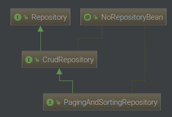

Interfaces Repository

Repository
/**
* Central repository marker interface. Captures the domain type to manage as well as the domain type's id type. General
* purpose is to hold type information as well as being able to discover interfaces that extend this one during
* classpath scanning for easy Spring bean creation.
* <p>
* Domain repositories extending this interface can selectively expose CRUD methods by simply declaring methods of the
* same signature as those declared in {@link CrudRepository}.
*
* @see CrudRepository
* @param <T> the domain type the repository manages
* @param <ID> the type of the id of the entity the repository manages
* @author Oliver Gierke
*/
@Indexed
public interface Repository<T, ID> {
}
CrudRepository
/**
* Interface for generic CRUD operations on a repository for a specific type.
*
* @author Oliver Gierke
* @author Eberhard Wolff
*/
@NoRepositoryBean
public interface CrudRepository<T, ID> extends Repository<T, ID> {
/**
* Saves a given entity. Use the returned instance for further operations as the save operation might have changed the
* entity instance completely.
*
* @param entity must not be {@literal null}.
* @return the saved entity will never be {@literal null}.
*/
<S extends T> S save(S entity);
/**
* Saves all given entities.
*
* @param entities must not be {@literal null}.
* @return the saved entities will never be {@literal null}.
* @throws IllegalArgumentException in case the given entity is {@literal null}.
*/
<S extends T> Iterable<S> saveAll(Iterable<S> entities);
/**
* Retrieves an entity by its id.
*
* @param id must not be {@literal null}.
* @return the entity with the given id or {@literal Optional#empty()} if none found
* @throws IllegalArgumentException if {@code id} is {@literal null}.
*/
Optional<T> findById(ID id);
/**
* Returns whether an entity with the given id exists.
*
* @param id must not be {@literal null}.
* @return {@literal true} if an entity with the given id exists, {@literal false} otherwise.
* @throws IllegalArgumentException if {@code id} is {@literal null}.
*/
boolean existsById(ID id);
/**
* Returns all instances of the type.
*
* @return all entities
*/
Iterable<T> findAll();
/**
* Returns all instances of the type with the given IDs.
*
* @param ids
* @return
*/
Iterable<T> findAllById(Iterable<ID> ids);
/**
* Returns the number of entities available.
*
* @return the number of entities
*/
long count();
/**
* Deletes the entity with the given id.
*
* @param id must not be {@literal null}.
* @throws IllegalArgumentException in case the given {@code id} is {@literal null}
*/
void deleteById(ID id);
/**
* Deletes a given entity.
*
* @param entity
* @throws IllegalArgumentException in case the given entity is {@literal null}.
*/
void delete(T entity);
/**
* Deletes the given entities.
*
* @param entities
* @throws IllegalArgumentException in case the given {@link Iterable} is {@literal null}.
*/
void deleteAll(Iterable<? extends T> entities);
/**
* Deletes all entities managed by the repository.
*/
void deleteAll();
}
PagingAndSortingRepository
/**
* Extension of {@link CrudRepository} to provide additional methods to retrieve entities using the pagination and
* sorting abstraction.
*
* @author Oliver Gierke
* @see Sort
* @see Pageable
* @see Page
*/
@NoRepositoryBean
public interface PagingAndSortingRepository<T, ID> extends CrudRepository<T, ID> {
/**
* Returns all entities sorted by the given options.
*
* @param sort
* @return all entities sorted by the given options
*/
Iterable<T> findAll(Sort sort);
/**
* Returns a {@link Page} of entities meeting the paging restriction provided in the {@code Pageable} object.
*
* @param pageable
* @return a page of entities
*/
Page<T> findAll(Pageable pageable);
}